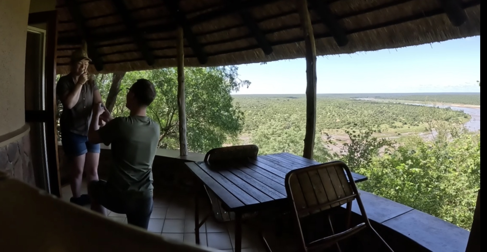

Ons verhaal
Er waren eens,
Twee hotello's in het Hoge Noorden die al een jaar om elkaar heen draaiden. Na vele proeverijen, avonden dansen in Shooters en een wijnreis, sloeg uiteindelijk de vonk over. Logischerwijs was de volgende stap verkering, en een verhuizing van een van de twee naar 146 km verderop. Leeuwarden-Leeuwarden werd Leeuwarden-Amsterdam, werd Castricum-Amsterdam, werd Castricum-Bussum, maar uiteindelijk Castricum-Castricum. Op de Schoutenbosch brak een nieuw hoofdstuk aan. Van jonge verkering, naar samenwonenden jongvolwassenen.
Lief en leed, alles hebben we gedeeld. Woningen, vakanties, een depressie, duikbrevetten, concerten, verliezen van dierbaren, nieuwe vrienden maken, etentjes, banen wissels, een waanzinnige reis inclusief verloving en natuurlijk papa en mama worden van Linn. Nu willen wij ook graag een stuk van ons verhaal met jullie delen. We nodigen jullie graag uit op 25 juni 2027 om deel uit te maken van dit nieuwe hoofdstuk. Wij zeggen: JA!
En ze leven nog lang en gelukkig…
Het aanzoek

En nu